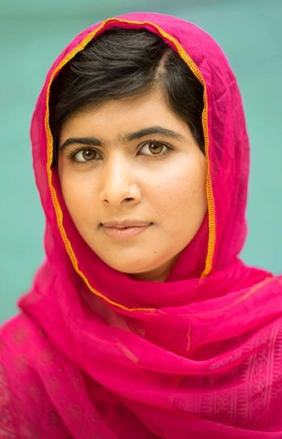

Biograpahy:
Malala is a young woman who has been through many challeges just because she stood up for womens rights. Malala was born in Pakistan where women are not treated or seen as equals to men. Malala's father ran a school for girls which Malala attened. After, the takeover of the Taliban in Malala's village, there were many rules that were in placed one being girls were not allowed to go to school. Malala decided to speak out on behalf of herself as well as the other girls she went to school with and because this it made her a target to the Taliban.One October day Malala was shot in the head from an extremist, her story is about survival, bravery, and determination.